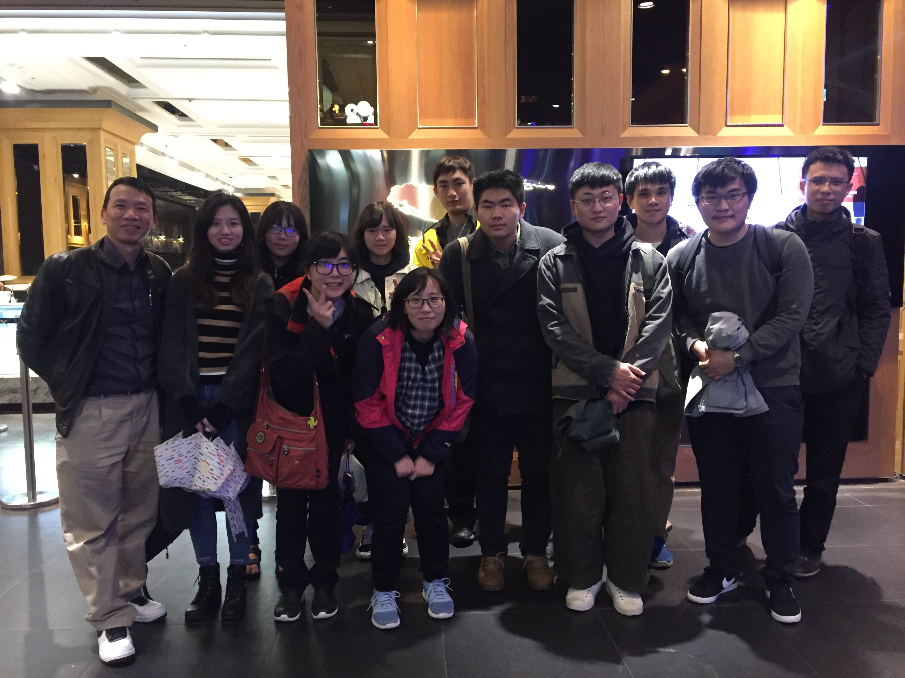

歷年活動照片歷屆研究所畢業生
| 年度 | 學位 | 姓名 | Name | 論文名稱（中） | 論文名稱（英） |
|---|---|---|---|---|---|
| 114 | 博士 | 陳勝舢 | 應用大型語言模型於網路威脅情資分析之研究 | ||
| 113 | 博士 | 石道全 | Tao-Chuan Shih | 以幾何深度學習與蛋白語言模型的融合策略的抗原表位預測系統 | |
| 碩士 | 黃士儼 | 膀胱癌血液和組織樣本DNA甲基化生物標記的表現評估比較分析 | |||
| 碩士 | 王笙 | 混合預測模型於醫藥銷售預測的應用 | |||
| 碩士 | 黃品宥 | 應用側面步態評估幼兒粗大動作發展之自動化分析 | |||
| 碩士 | 胡庭瑋 | 基於深度學習和影像增強技術應用於下肢水腫檢測與等級分類之研究 | |||
| 碩士 | 楊哲綸 | 基於 ViT 和 Attention Bi-LSTM 的數位病理影像分類方法及其對細胞異常檢測的應用 | |||
| 碩士 | 林俐雯 | 基於FastGAN加入輔助分類器提升尿液細胞影像合成質量與可控性 | |||
| 碩士 | 陳維鈞 | 糖尿病腎病變之DNA甲基化生物標記分析 | |||
| 碩士 | 林煥智 | 基於類神經網路之可解釋性方法應用於疾病共病預測 | |||
| 碩士 | 黃芬緯 | 甲基化基因生物標記應用於大腸直腸癌之預測分析 | |||
| 碩士 | 蔡嘉銨 | 使用步態特徵進行幼兒粗大動作發展之自動分析 | |||
| 碩士 | 黃士銘 | 新冠疫情對美國肺部疾病醫療器械之召回根因關聯規則分析 | |||
| 112 | 碩士 | 余承翰 | 比較機器學習預測呼吸器相關肺炎死亡率與特徵分析 | ||
| 碩士 | 黃乃軒 | 以手繪圖形影像評估兒童精細動作之自動辨識機制 | |||
| 碩士 | 楊尹彰 | 基於動作特徵自動辨識嬰兒之粗大動作發展輔助評估研究 | |||
| 碩士 | 林祐靖 | 基於深度學習技術應用於下肢水腫不同等級之自動分類 | |||
| 碩士 | 陳榮庭 | 基於CycleGAN恆等損失函數改進數位病理影像的染色正規化效果 | |||
| 碩士 | 林宛佳 | 基於耳機蒐集的心跳速率與六軸慣性訊號以機器學習模組辨識睡眠期別 | |||
| 碩士 | 韓靖 | 氣泡瑕疵自動檢測與修復實現應用於 IHC 數位病理影像 | |||
| 111 | 碩士 | 黃宥勛 | 聯邦式學習模型應用於乳癌數位病理影像分析 | ||
| 碩士 | 簡旭均 | 心臟衰竭患者六分鐘步行測試之特徵分析 | |||
| 碩士 | 梁博瑜 | 基於電腦叢集的疾病基因關聯查詢系統及疾病相似度分析 | |||
| 碩士 | 吳陽生 | 透過彈性主樹揭示肌萎縮性側索硬化症之疾病發展 | |||
| 碩士 | Bhat Mahmood Hussain | 通過組合超級公式和生成對抗網路資料擴增技術提升蘋果樹葉疾病之圖像分割 | |||
| 碩士 | 王星文 | 綜整SMOTE與WCGAN-GP技術強化小型表格臨床試驗之混合資料擴增 | |||
| 碩士 | 唐岳 | 使用比例式 Jaccard 指標辨識共病樣式及預測罹患心臟衰竭之高風險患者 | |||
| 碩士 | 彭柏誠 | 以機器學習分析醫療紀錄的時間屬性以預測心臟衰竭之風險 | |||
| 110 | 碩士 | 倪嘉言 | 使用小波分析與波峰偵測輔助運動週期性呼吸之判斷 | ||
| 碩士 | VAIBHAV KUMAR SUNKARIA | An Integrated Approach For Uncovering Novel DNA Methylation Biomarkers For Non-small Cell Lung Carcinoma | |||
| 碩士 | VINOTHINI SIVARAMAKRISHNAN | Identification and Comparison of DNA Methylation Biomarkers for Kidney Renal Clear Cell Carcinoma and Renal Papillary Cell Carcinoma | |||
| 碩士 | 許邦毅 | 互動式病理組織影像之細胞核檢測系統 | |||
| 碩士 | 何韋辰 | 嬰幼兒神經發展之適應性評估追蹤系統 | |||
| 碩士 | 歐陽緒 | 使用類 U-Net 架構進行乳癌區域辨識的跨染色組織病理學影像分割 | |||
| 碩士 | 黃彥穎 | 基於引導式對話之學齡前兒童語言能力分析 | |||
| 碩士 | 張育瑞 | 動態顏色反卷積系統應用於H&E影像染色分離 | |||
| 109 | 碩士 | 羅芸岑 | 企業財務表單文件影像分析及資料擷取 | ||
| 碩士 | 楊亞政 | 基於BERT語言模型之衛教機器人對話系統 | |||
| 碩士 | 蔣維 | 疾病軌跡路徑分析與相對風險指標預測 | |||
| 碩士 | 彭正鈦 | 中文語音文字線上情緒辨識及應用 | |||
| 碩士 | 譚榮棋 | 以手環及生物特徵預測心臟衰竭患者未來風險 | |||
| 90 | 碩士 | 莊文圳 | Wen-Jung Juang | 一種應用於車速自動偵測之適應性比對演算法 | Adaptive Windowing Predication for Vehicle Speed Estimation |
| 碩士 | 蔡顏丞 | Yen-Cheng Tsai | 動態邊界偵測在微陣列影像上的分析 | Microarray Image Analysis by Active Contour Models | |
| 91 | 碩士 | 楊志耀 | Chih-Yao Yang | 基於人臉影像與臉譜特徵向量之二維卡通臉譜系統 | Facial Image and Customized Feature-Vector Based 2D Caricature Generating Systems |
| 92 | 碩士 | 朱家漢 | Jia-Han Chu | 具可變長度及容忍度特徵之字串搜尋比對演算法 | Efficient Pattern Matching Algorithms for Variable-Length and Tolerant Strings |
| 碩士 | 張福生 | Fu-Sheng Chang | 以ASM為基礎之人臉特徵擷取系統 | ASM-Based Facial Feature Extraction Systems | |
| 碩士 | 董致成 | Jr-Cheng Dung | 卡通臉譜特徵向量之分群與合成 | Feature Clustering and Synthesis of Caricatures | |
| 93 | 碩士 | 吳佩芷 | Pei-Chih Wu | 近似特徵比對技術應用於唯一樣式之偵測 | Approximate Feature Matching Techniques for Unique Pattern Detection |
| 碩士 | 張為元 | Wei-Yuan Chang | 區間跳躍演算法應用於階層式群體特徵擷取與分析 | Hierarchical Group Feature Extraction and Analysis Based on Interval Jumping Algorithms | |
| 94 | 碩士 | 黃群凱 | Chun-Kai Huang | 個人卡通臉譜繪畫風格轉換與誇張化技術之探討 | The Research on Painting Style Transformation and Exaggeration for Customized Cartoon Caricatures |
| 碩士 | 蘇柏翰 | Bo-Han Su | 限制性多重蛋白質結構特徵排比應用於唯一樣式之偵測 | Constrained Multiple Protein Structure Feature Alignment for Unique Pattern Detection | |
| 碩士 | 張柏豪 | Po-How Chang | 應用於數學數位教學環境之手繪幾何圖形辨識 | Online Hand-Drawn Geometric Shape Recognition for the Application of Mathematics E-Teaching Environments | |
| 碩士 | 周偉堯 | Wei-Yao Chou | 多重索引序列排比應用於群組特徵擷取之研究 | A Study on Group Feature Extraction Based on Multiple Indexing Sequence Alignment | |
| 95 | 碩士 | 劉志鴻 | Chih-Hong Liu | 以數學形態學為基礎之生化濾波器應用於線性抗原預測 | Mathematical Morphology Based Biochemical Property Filters for Linear Epitope Prediction |
| 碩士 | 唐正英 | Cheng-Ying Tang | 改進Effort-Moderated試題反應模型之研究 | A Research on Improved Effort-Moderated Item Response Model | |
| 碩士 | 王信偉 | Hsin-Wei Wang | 建構一個動態筆墨技術為基礎之數位學習系統 | Construction of a Dynamic Ink Technology Based E-Learning System | |
| 碩士 | 張瑞祥 | Ruei-Hsiang Chang | 以二級結構幾何關聯為基礎之多重結構排比 | Multiple Structure Alignment Based on Geometrical Correlation of Secondary Structure Elements | |
| 碩士 | 徐肇陽 | Chao-Yang Hsu | 具多重樣板偵測機制之人臉特徵自動擷取系統 | An Automatic Facial Feature Extraction System with Multiple Template Detection Mechanism | |
| 96 | 碩士 | 陳建智 | Chien-Chih Chen | 臉部特徵擷取與中文視素轉換應用於卡通動畫合成 | Facial Feature Extraction and Chinese Text-to-Viseme for Cartoon Animation Synthesis |
| 碩士 | 鐘煒鈞 | Wei-Jun Zhung | 基於抗原特性及幾何位置之組合式抗原決定基預測 | Conformational Epitope Prediction based on Geometrical relationship and Antigenic Characteristics | |
| 97 | 碩士 | 陳治嘉 | Chih-Chia Chen | 基於比較基因體偵測人類疾病基因的串聯重複序列 | Short Sequence Repeat Discovery for Human Disease Genes Based on Comparative Genomics |
| 碩士 | 陳典佑 | Tien-Yu Chen | 多重蛋白質結構重疊之疊代精煉演算法 | Iterative Refinement Algorithm for Multiple Protein Structure Superposition | |
| 碩士 | 吳偉國 | Wei-Kuo Wu | 基於幾何特性之B細胞組合式抗原決定基預測系統 | Prediction of B-cell Conformational Epitopes by Geometrical Affinity and Propensity Approaches | |
| 碩士 | 許雁筑 | Yen-Chu Hsu | 結合疊代修正之混合式多重結構排比演算法 | A Hybrid Multiple Structure Alignment Algorithm with Iterative Refinement | |
| 碩士 | 陳建銘 | Chien-Ming Chen | 透過比較基因體學尋找具功能性的簡單重複序列 | Discovering Functional Simple Sequence Repeat through Comparative Genomics | |
| 碩士 | 孫江曼 | Chiang-Man Sun | 基於蛋白質二級結構間距離矩陣之多重結構排比 | Distance Matrix Analysis of Mutual Secondary Structure Pairs for Multiple Structure Alignment | |
| 98(1) | 碩士 | 高華霙 | Hua-Ying Kao | 蛋白質序列及結構內部重複樣式之偵測 | Identification of Internal repeat Patterns within Proteins Sequences and Structures |
| 99(1) | 碩士 | 林雅琪 | Ya-Chi Lin | 基於支持向量機及物理化學性質為基礎的線性抗原預測系統 | Linear Epitope Prediction Based on Support Vector Machine and Propensity Scale Method |
| 99 | 碩士 | 何芝穎 | Chih-Yin Ho | 青光眼特徵分析及自動臨床診斷系統建置 | An automatic fundus image analysis system for clinical diagnosis of glaucoma |
| 碩士 | 蔡岳霖 | Yueh-Lin Tsai | 基於測地線距離特徵之形狀不變性描述子進行蛋白質表面比對之研究 | Deformation Invariant Descriptors Based on Geodesic Distance Features for Protein Surface Comparison | |
| 碩士 | 莊家盛 | Chia-Sheng Chuang | 使用生物途徑之映射模式進行同源基因之比對分析：以缺氧誘導因子為例 | Biological Pathway Mapping Model for Homologous Gene Comparison - A Case Study on Hypoxia-Inducible Factor | |
| 碩士 | 羅英倉 | Ying-Tsang Lo | 使用CUDA平行處理技術加速蛋白質結構表面之立體角性質比對分析 | Comparison of solid angle property on protein surfaces with CUDA acceleration | |
| 100 | 碩士 | 施燦煌 | Tsan-Huang Shih | 轉錄體功能註解及跨物種比對分析 | Functional Annotation of Transcriptomic Data and Cross-species Comparison |
| 101 | 碩士 | 黃箴理 | Jhen-Li Huang | 跨物種簡單重複序列生物標記之辨識 | Identify Cross-Species Simple Sequence Repeat Biomarkers |
| 碩士 | 楊晴涵 | Cing-Han Yang | 蛋白質序列分析與功能域邊界辨識 | Protein Sequence Analysis and Boundary Detection of Functional Domain | |
| 碩士 | 陳煜倫 | Yu-Lun Chen | 基於後綴樹演算法之同源共線性區塊偵測與辨識 | Homologous Synteny Block Detection and Recognition Based on Suffix Tree Algorithms | |
| 碩士 | 彭奕翔 | Yi-Siang Peng | 眼球表面臨床影像之眼角膜血管增生辨識 | Detecting corneal neovascularization based on clinical ocular surface images | |
| 碩士 | 劉振隆 | Chen-Lung Liu | 跨生物路徑資料庫探勘反饋迴路和耦合反饋迴路 | Discovering feedback and coupled feedback loops from integrated pathway databases | |
| 102 | 博士 | 王信偉 | Hsin-Wei Wang | 蛋白質結構排比及彈性結構比對 | Protein structure alignment and flexible structure comparison |
| 碩士 | 陸宇倫 | Yu-Lun Lu | 以基因本體論篩選管家基因進行基因表現量正規化分析 | Gene Expression Normalization by GO based Housekeeping Gene Selection | |
| 碩士 | 蕭志邦 | Chi-Pong Sio | 人類基因組之簡單重複序列多態性辨識 | Identification of SSR Polymorphisms for Human Genomes | |
| 碩士 | 龔興浩 | Hsing-Hao Kung | 基於共線區塊特徵進行魚類模式物種之基因體比較 | Comparative Genomics for Fishery Model Species based on Syntenic Blocks | |
| 103 | 碩士 | 彭元祺 | Yuan-Chi Peng | 超音波影像與慢性腎臟病期數之關聯性分析 | Association analysis of stage of chronic kidney disease and ultrasonography |
| 104 | 碩士 | 鄭弘翊 | Hung-Yi Cheng | α螺旋蛋白質內部重複單元切割與分類 | Internal Repeat Segmentation and Subtype Classification of α-solenoid Proteins |
| 碩士 | 王騰緯 | Teng-Wei Wang | 錨蛋白重複域之蛋白質序列辨識及功能分群 | Ankyrin Repeat Domain Sequence Identification and Functional Clustering | |
| 碩士 | 張婉麗 | Wan-Li Chang | 基於序列抗原特性與結構表面特徵之構象抗原表位預測 | Conformational Epitope Prediction based on Sequence Antigenicities and Surface Characteristics | |
| 105 | 博士 | 陳建銘 | Chien-Ming Chen | 透過系統生物學強化RNA-seq表現差異分析流程 | Improving RNA-Seq Differential Expression Analysis through System Biology Approaches |
| 碩士 | 林琨祐 | Kun-You Lin | DNA浮水印技術之研究與系統開發 | A Study on DNA Watermark Technology and System Development | |
| 碩士 | 李冠荭 | Kuan-Hung Li | 多物種選擇用於轉錄體功能分析 | Multiple Species Selection for Transcriptomics Sequencing and Functional Analysis | |
| 106 | 碩士 | 劉穎杰 | Ying-Jie Liu | KEGG生物路徑之完整子圖建構與分析 | Complete subgraph construction and analysis for KEGG biological pathways |
| 博士 | 羅英倉 | Ying-Tsang Lo | 抗原結合表面區塊分析與組合式抗原表位預測 | Antigen binding surface patch analysis and conformational epitope prediction | |
| 碩士 | 劉俊成 | Chun-Cheng Liu | 全轉錄體基因表現差異群組之強化KEGG生物路徑功能註解 | An enhanced KEGG biological pathway functional annotation for RNA-seq differentially expressed gene clusters | |
| 碩士 | 張仰鈞 | Yang-Chun Chang | 台灣吳郭魚特定功能基因群之簡單重複序列生物標記 | Functional simple sequence repeat (SSR) biomarkers for specific gene group of Taiwan tilapia | |
| 107 | 碩士 | 蕭仲圻 | Chung-Chi Hsiao | 使用長鏈非編碼RNA相關性改善基因本體論之過表現分析 | Improving Overrepresentation Analysis of Gene Ontology based on Long Noncoding RNA Association |
| 碩士 | 劉晉睿 | Chin-Jui Liu | 3D蛋白質列印之支撐架構設計及材料減量 | Supporting structure design and material reduction for 3D protein printing | |
| 碩士 | 許少捷 | Shao-Chieh Hsu | 於物聯網裝置輔助心臟衰竭患者之復健照護系統 | Auxiliary Rehabilitation Healthcare System for Heart Failure Patients Using Internet-of-Thing Devices | |
| 108 | 碩士 | 石道全 | Tao-Chuan Shih | 基於投票機制之虹彩病毒科與野田病毒科的宿主專一性抗原表位預測 | A voting mechanism-based linear epitope prediction system for the host-specific Iridoviridae and Nodaviridae |